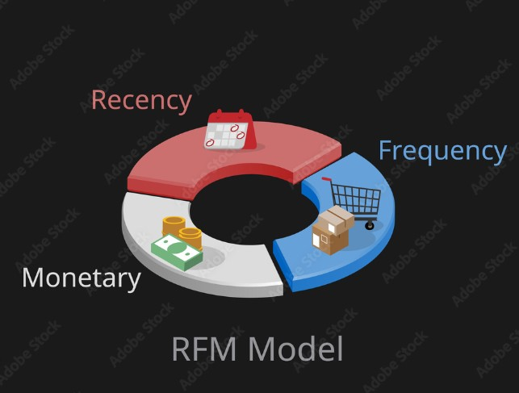
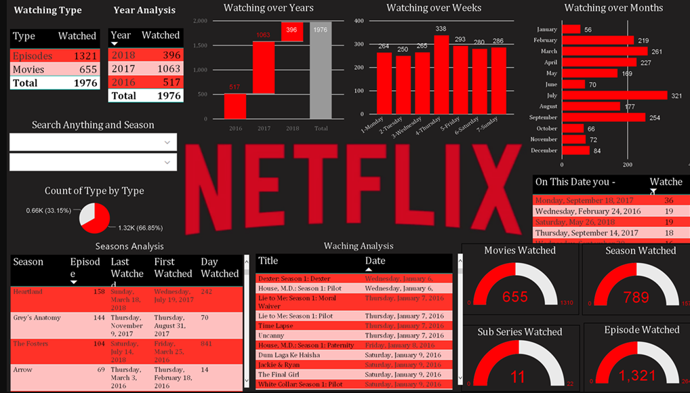
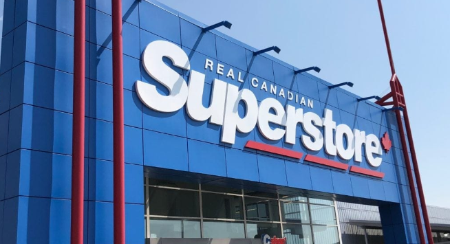
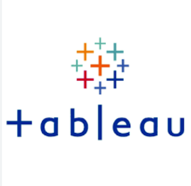

In this project,I have used Superstore dataset provided by Kaggle to uncover the most loyal, slipping customers and where are they from to provide insights for targeted marketing communications.
In this project,I have used dataset provided by Motivate to uncover bike share usage patterns and compare the system usage between three large cities: Chicago, New York City, and Washington, DC.

In this project, I explore number of Netflix movie titles which are either Movie or TV Show, most tiltes come under which rating, ost Movie/ TV Show titles are given which rating and which country had most releases.

In this project, I have analysed which region has least sales, how are the sales of each category is divided across the regions, how are the Sales across each segment, which State has the lowest sales and which City has the lowest sales.

This holds all of my Tableau Dashboards.